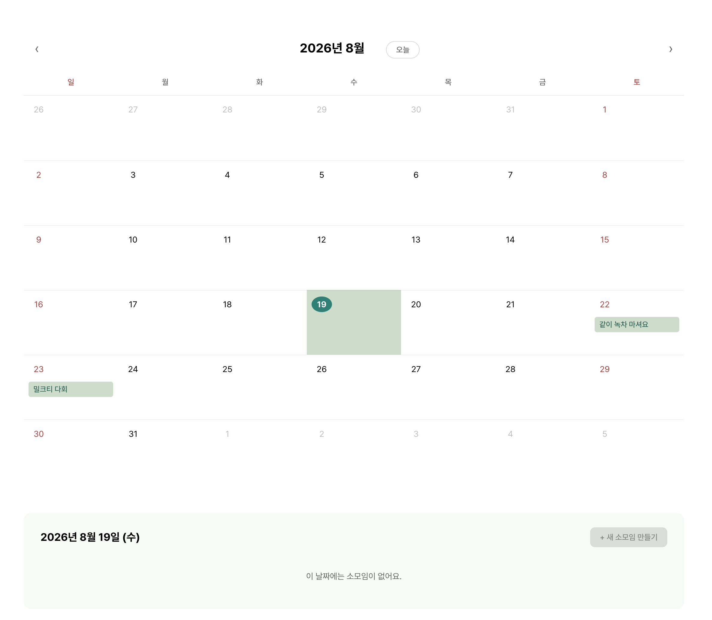
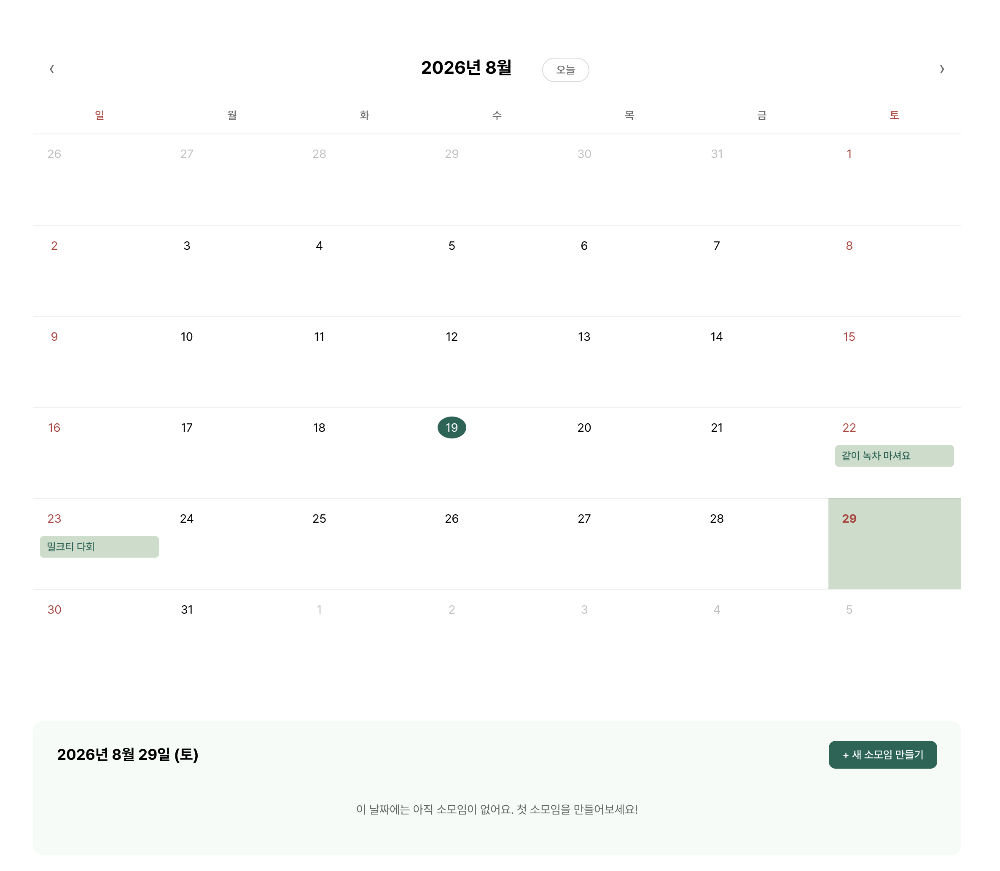
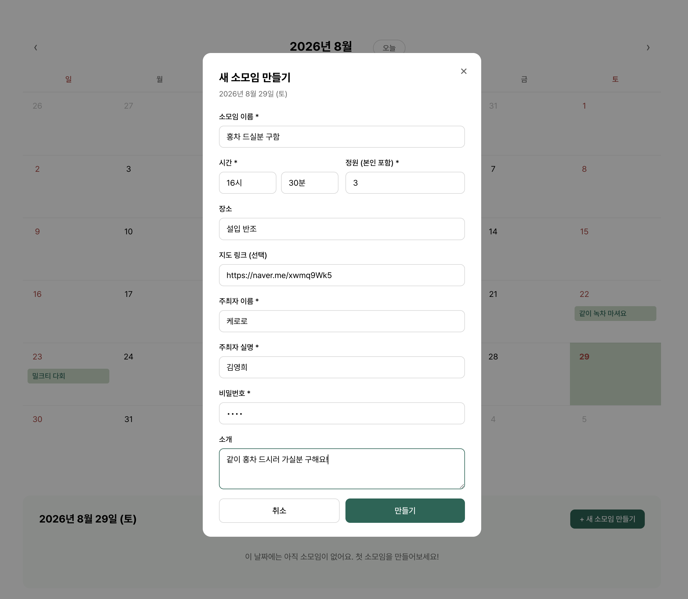
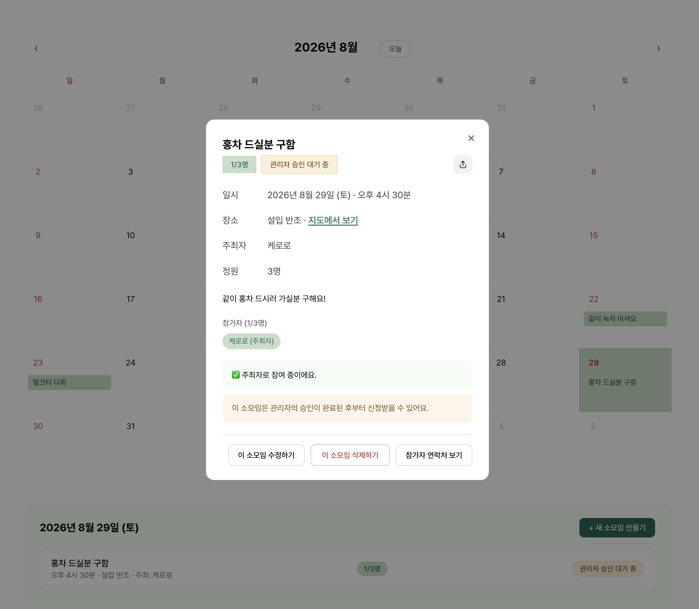
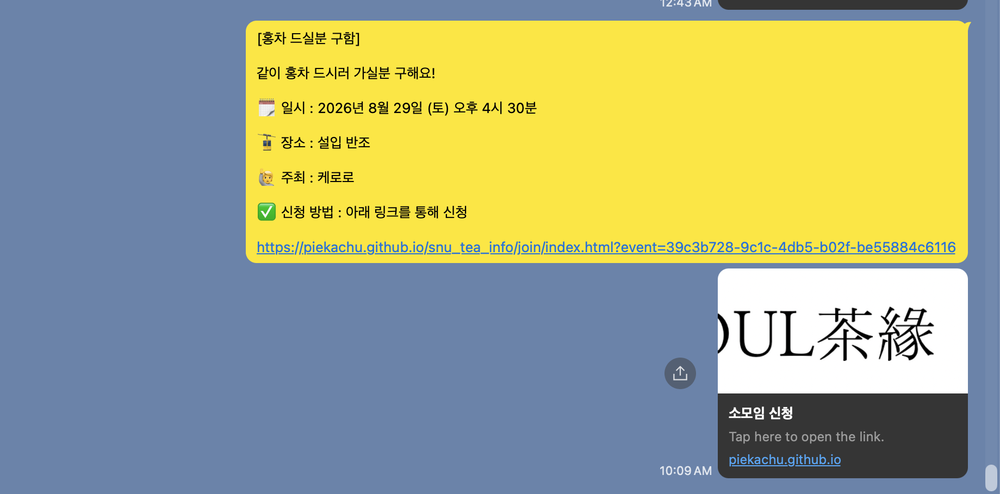
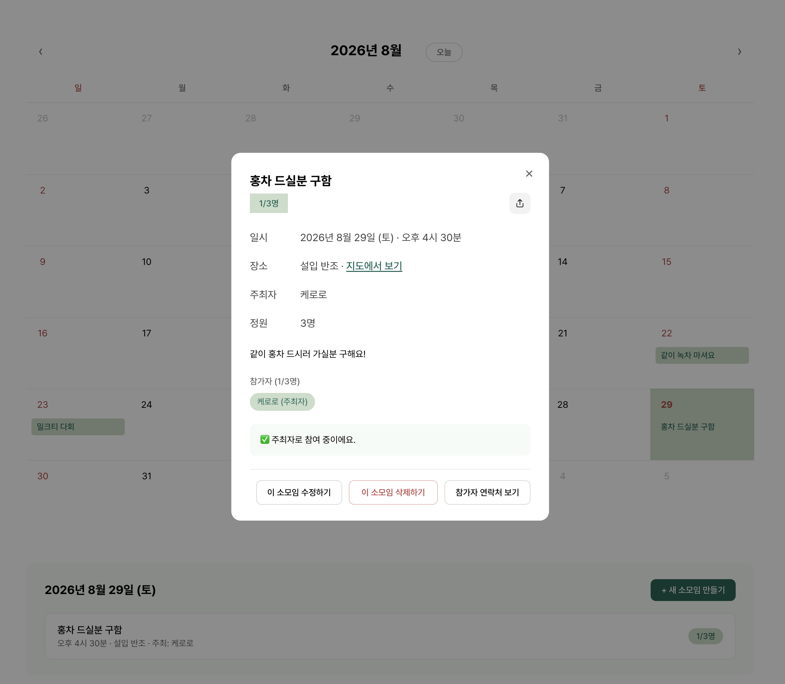
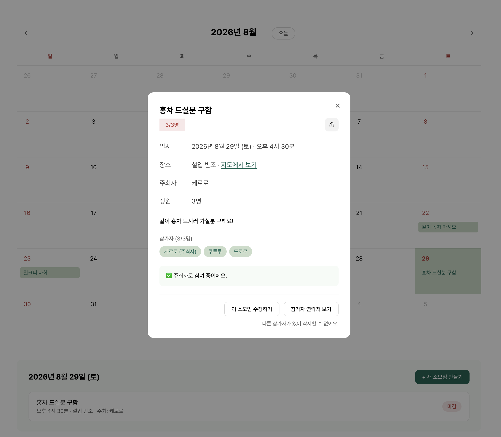
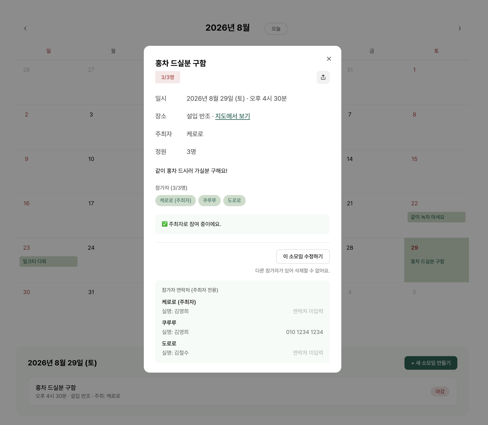
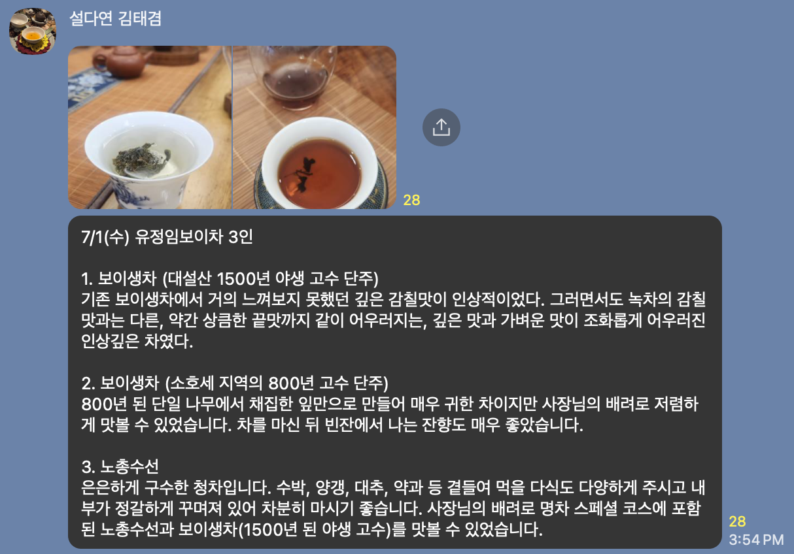

소모임 신청 방법
설다연에서는 누구나 자유롭게 소모임을 열거나 참여할 수 있어요. 소모임 신청 페이지에서 새 소모임을 만드는 방법과 이미 열려 있는 소모임에 신청하는 방법을 순서대로 안내드릴게요.
새 소모임 만들기
-
소모임 신청 페이지를 열어주세요.
소모임 신청 페이지에 들어가면 이번 달 캘린더가 보여요. 이미 열린 소모임은 초록색 칩으로 날짜 아래에 표시되고, 오늘 날짜에는 진한 초록 원이 둘러져요. 좌우의 < > 화살표로 다른 달을 살펴볼 수도 있고, 다른 달을 보다가 오늘 버튼을 누르면 오늘이 있는 달로 바로 돌아와요.

-
소모임을 열고 싶은 날짜를 골라주세요.
달력에서 원하는 날짜를 클릭하면 그 셀에 연한 초록 배경이 씌워지고, 화면 아래쪽 패널에 그 날의 소모임 목록이 나타나요. 아직 열린 소모임이 없다면 "이 날짜에는 아직 소모임이 없어요. 첫 소모임을 만들어보세요!"라는 안내와 함께 오른쪽에 + 새 소모임 만들기 버튼이 초록색으로 활성화됩니다. 소모임은 내일 이후 날짜부터 만들 수 있어요. 오늘이나 지난 날짜에는 + 새 소모임 만들기 버튼이 비활성화됩니다.

-
소모임 정보를 입력해주세요.
+ 새 소모임 만들기를 누르면 개설 창이 뜹니다. 소모임 이름, 시간(시·분 각각 선택), 정원, 장소, 지도 링크, 주최자 이름과 실명, 편집 비밀번호, 그리고 간단한 소개를 채워주세요. * 표시가 있는 항목은 필수예요. 정원은 본인을 포함해 3명 이상이어야 하고, 지도 링크는 선택 사항이지만 네이버 지도 공유 링크를 붙여넣으면 다른 부원들이 바로 길찾기를 할 수 있어요. 다 채웠다면 만들기를 누릅니다.
편집 비밀번호는 나중에 소모임을 수정·삭제하거나, 다른 기기에서 참가자 명단을 확인할 때 반드시 필요해요. 잊어버리면 관리자만 처리할 수 있으니 안전한 곳에 꼭 적어두세요.

-
등록되면 '관리자 승인 대기 중' 상태가 돼요.
방금 만든 소모임은 즉시 캘린더에 표시되지만, 상세 창 상단에 1/3명 옆으로 노란색 관리자 승인 대기 중 칩이 붙어요. 아래쪽에는 "이 소모임은 관리자의 승인이 완료된 후부터 신청받을 수 있어요."라는 안내가 뜹니다.
승인 전에는 주최자 외에는 신청할 수 없어요. 링크를 공유해도 다른 부원들은 신청 버튼이 보이지 않아요.

-
단체 카카오톡방에서 승인을 요청해주세요.
상세 창 오른쪽 위의 공유 버튼(↑)을 누르면 소모임 정보와 신청 링크가 한 번에 정리된 텍스트가 클립보드에 복사돼요. 이 내용을 그대로 설다연 잡담방에 붙여넣고, 공유해주시면 됩니다! 관리자가 확인하는대로 승인만 처리되면 그 링크로 부원들이 바로 신청할 수 있어요.

-
관리자가 승인하면 신청이 열려요.
관리자가 승인하면 관리자 승인 대기 중 칩과 안내 문구가 사라지고, 상세 창은 일반 소모임과 같은 모습이 돼요. 이제부터 부원들이 링크를 통해 신청할 수 있어요. 소모임 카드에도 정원 인원 수(예: 1/3명)만 남게 됩니다.

-
신청이 들어오면 참가자 명단이 채워져요.
누군가 신청할 때마다 참가자 (n/m명) 아래의 초록 칩 목록에 이름이 하나씩 추가돼요. 정원이 모두 차면 상단 인원 칩이 붉은 빛으로 바뀌고, 캘린더 목록에서는 마감 표시가 뜹니다.
다른 참가자가 있으면 소모임을 삭제할 수 없어요. 부득이하게 취소해야 한다면 참가자들에게 먼저 안내한 뒤, 관리자에게 문의해주세요.

-
주최자는 참가자 연락처를 확인할 수 있어요.
상세 창 하단의 참가자 연락처 보기를 누르면 참가자 연락처 (주최자 전용) 박스가 열려요. 여기에는 각 참가자의 실명과 연락처가 표시됩니다 (입력하지 않은 참가자는 연락처 미입력으로 보여요).
소모임 주최자는 이걸 확인해서 늦지 않게 소모임 참가자들과 꼭 톡방을 개설하고, 약속 장소나 시간 등을 협의하면 됩니다! 혹시라도 인원이 생각한 만큼 많이 모이지 않았더라도, 신청자가 있다면 꼭 연락을 해서 모임 파투 여부를 알려주세요!

-
소모임이 끝난 뒤에는 시음기를 공유해주세요.
소모임을 마친 후에는 설다연 잡담방에 소모임을 함께한 분들의 시음기를 모아서 공유해주세요! 날짜 · 함께 방문한 찻집 · 참여 인원과 함께 마셨던 차에 대한 시음기를 사진과 같이 공유해주시면, 운영진 확인 이후 조원당 2500원의 지원금을 드립니다!

이미 열린 소모임에 신청하기
-
관심 있는 날짜를 클릭해주세요.
캘린더에서 소모임 표시(초록색 점 · 제목)가 있는 날짜를 클릭하면 그 날의 소모임 목록이 아래에 나타나요. 여러 개가 열려 있다면 시간 순으로 정렬됩니다.

-
참여하고 싶은 소모임 카드를 눌러주세요.
카드를 누르면 상세 정보 창이 열립니다. 시간, 장소, 주최자, 정원, 현재 참가자 명단, 그리고 소개를 확인할 수 있어요. 정원이 다 찼거나 신청이 마감된 소모임은 마감 표시가 뜹니다.

-
신청 정보를 입력해주세요.
이름은 참가자 목록에 공개되는 이름이에요 (닉네임도 가능). 실명과 연락처는 주최자와 관리자만 볼 수 있어요. 취소 비밀번호는 다른 기기에서 신청을 취소할 때 반드시 필요하니 기억할 수 있는 값으로 설정해주세요.

-
"신청하기" 버튼을 누르면 완료!
신청이 성공하면 ✅ (이름)님으로 신청 완료했어요 메시지가 뜹니다. 같은 기기에서는 신청 취소하기 버튼으로 바로 취소할 수 있어요. (단, 행사 2일 전부터는 취소 불가.)

-
다른 기기에서 취소해야 한다면?
휴대폰이나 다른 브라우저에서 신청한 뒤 취소하고 싶다면, 소모임 상세 창 하단의 "다른 기기에서 신청하셨나요? 비밀번호로 취소하기" 링크를 눌러주세요. 신청 때 입력한 실명 + 취소 비밀번호로 취소할 수 있어요.

궁금한 점이 있다면? 임원진에게 편하게 문의해주세요. 이 페이지는 소모임 신청이 처음이신 분들을 위한 안내이며, 실제 기능과 다르게 안내된 부분이 있다면 알려주세요.